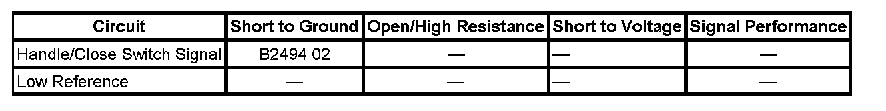

B2494
DTC B2494
DTC DESCRIPTOR
DTC B2494 02
Liftgate Handle Switch Circuit Short to Ground
DIAGNOSTIC FAULT INFORMATION

Perform the Diagnostic System Check - Vehicle prior to using this diagnostic procedure. Initial Inspection and Diagnostic Overview
CIRCUIT/SYSTEM DESCRIPTION
The handle switch and close switch are parallel circuits and provide a single input to the liftgate control module. The handle/close switch signal circuit is supplied battery voltage through a resistor and monitored within the liftgate control module. The switches share a common low reference circuit from the liftgate control module and when the switch contacts close the signal circuit goes low and the liftgate control module determines the switch to be active.
CONDITIONS FOR RUNNING THE DTC
System voltage to the liftgate control module must be 9-16 volts.
CONDITIONS FOR SETTING THE DTC
The handle/close switch signal circuit is active for longer than 10 minutes.
ACTION TAKEN WHEN THE DTC SETS
Power open and close functions from the handle switch and the rear close switch will be disabled.
CONDITIONS FOR CLEARING THE DTC
- The DTC will be current for as long as the fault is present.
- When the fault is no longer present, the DTC will be a history status code.
- A history DTC will clear after 50 ignition cycles or with a scan tool using the clear DTCs function.
CIRCUIT/SYSTEM TESTING
1. Install a scan tool and display the liftgate handle switch status parameter in the liftgate module data list.
2. Ignition ON, verify that the parameter displays inactive when the body harness to liftgate harness inline connector is disconnected.
- If the parameter displays active, test the handle/close switch signal circuit in the body harness for a short to ground. If the circuit tests normal, replace the liftgate control module.
3. Using a DMM verify that continuity to ground is not present from the handle/close switch signal circuit terminal in the liftgate harness inline connector.
- If continuity to ground is present, repair the handle/close switch signal circuit in the liftgate harness for a short to ground.
4. If the circuits test normal, replace the stuck switch.
REPAIR INSTRUCTIONS
Perform the Diagnostic Repair Verification after completing the diagnostic procedure.
- Liftgate Release Switch Replacement
- Control Module References for liftgate control module replacement, programming and setup. Verification Tests Programming and Relearning